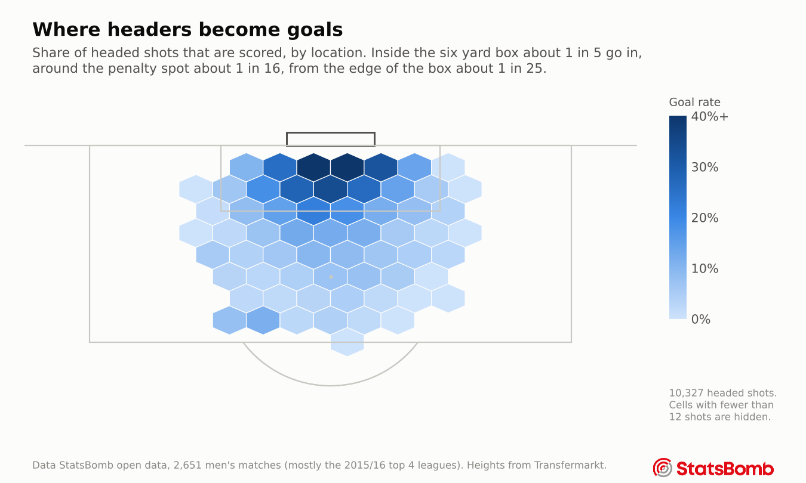
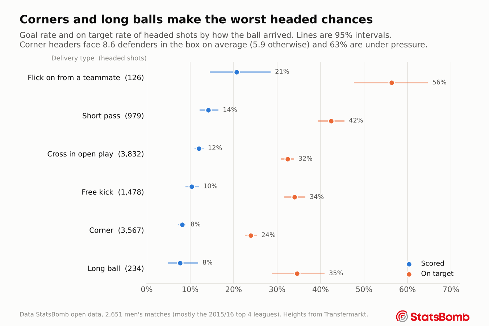
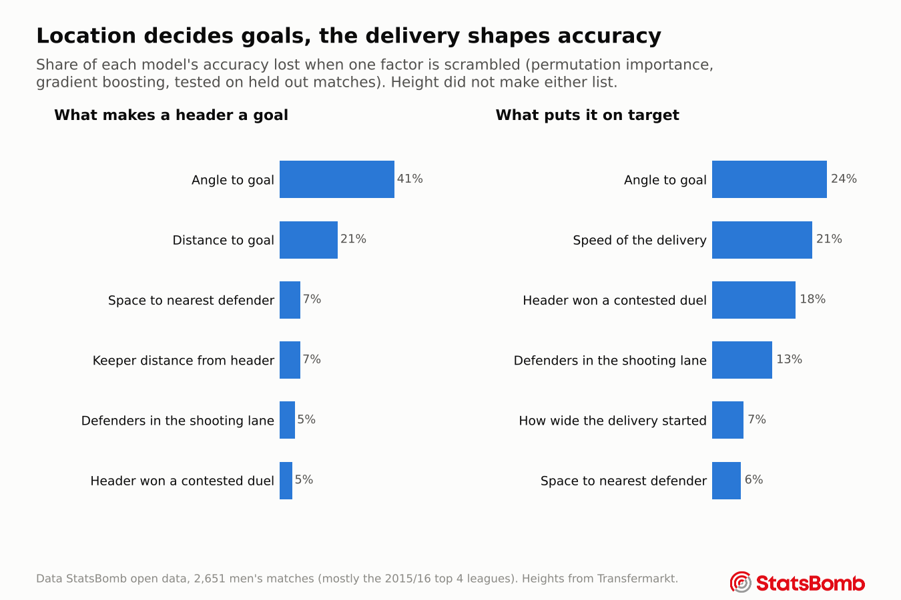
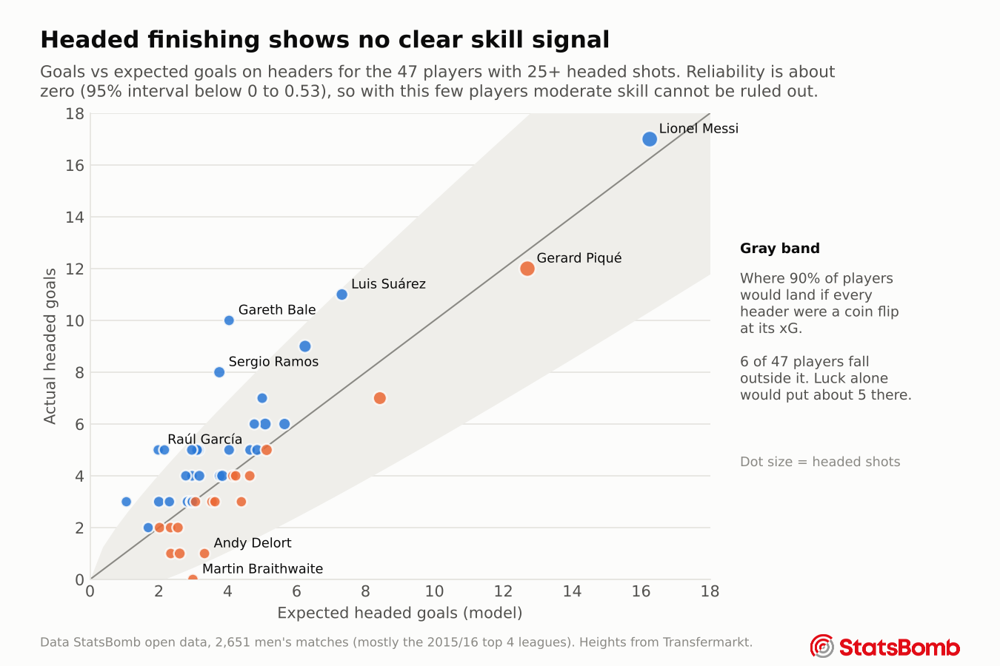

Chapter 2
Attacking headers
What turns a header into a goal, and does anyone finish headers better than the situation predicts?
Expected goals, in one example
Of the 2,129 headed shots taken inside the six yard box, 21% were goals. Of the 2,182 taken around the penalty spot, only 6% were. That rate is the idea behind expected goals (xG). Every header gets a probability based on headers like it, and a player's goals minus his xG shows whether he scored more than his chances deserved.
A real xG model does the same thing with many details at once, such as the angle, the defenders in the way, where the keeper stands and how the ball arrived.

How the ball arrives matters
A flick on from a teammate is the best headed chance, with about 1 in 5 going in. Corners and long balls are the worst, at about 1 in 12. Corner headers face 8.6 defenders in the box on average, against 5.9 for other deliveries, and 63% of them are under pressure.

What the model relies on
Two models were built for every question, a logistic regression that is easy to explain and a gradient boosting model that can find more complex patterns. To see what a model leans on, one input at a time is shuffled at random and the drop in accuracy is measured.

Angle and distance explain about 60% of what the goal model knows. Getting the header on target depends more on the delivery, especially how fast the ball comes in and whether the header was contested.
Height is not on either list. Taller players do not score more than their xG says, and adding height to the model left its accuracy unchanged. Height helps a player reach the ball. Once he has, position and space decide the rest.
How good is the model
The model was tested on matches it never saw during training. It ranks a random goal above a random miss 74% of the time (AUC 0.743, with a 95% interval of 0.728 to 0.758). StatsBomb's own professional xG scores 0.749 on the same headers. The difference of 0.006 is well inside the noise, so the two cannot be told apart (paired test p = 0.20).
The model's probabilities are also honest. When it gives a group of headers about a 10% chance, 10.7% of them go in, and across all headers it predicts 0.106 goals per header against a real rate of 0.107. The Method page has the full calibration check.
Does anyone finish headers better than expected?
This was one of the main questions, and the honest answer is that the data cannot tell. Only 47 players have 25 or more headed shots, and their goals sit inside the range that luck alone would produce. Chapter 4 puts a number on it. Finishing above xG has a reliability of about zero, with a 95% interval that still reaches 0.53, so moderate skill cannot be ruled out.

A list of who beats their headed xG is easy to make and looks convincing. With this little data per player, it should not be trusted in either direction.